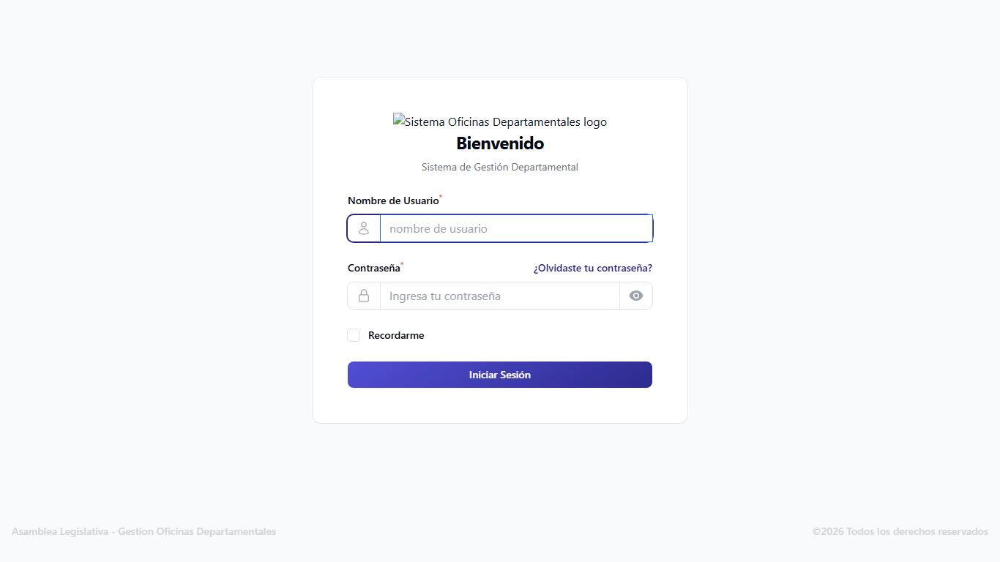
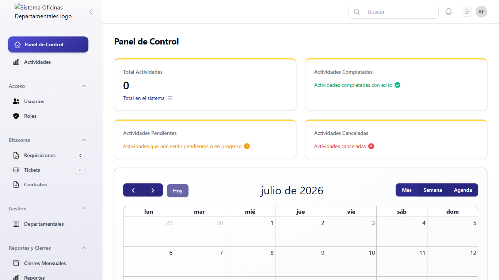
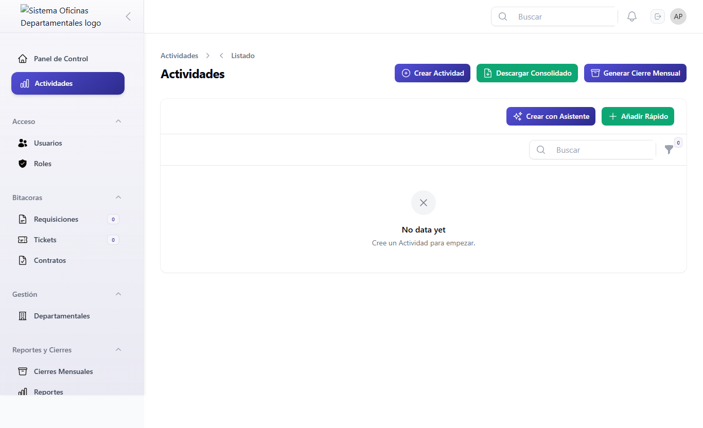
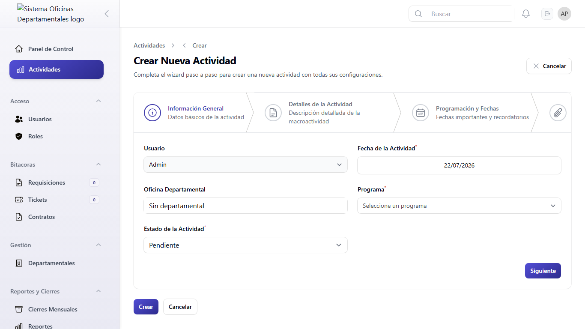
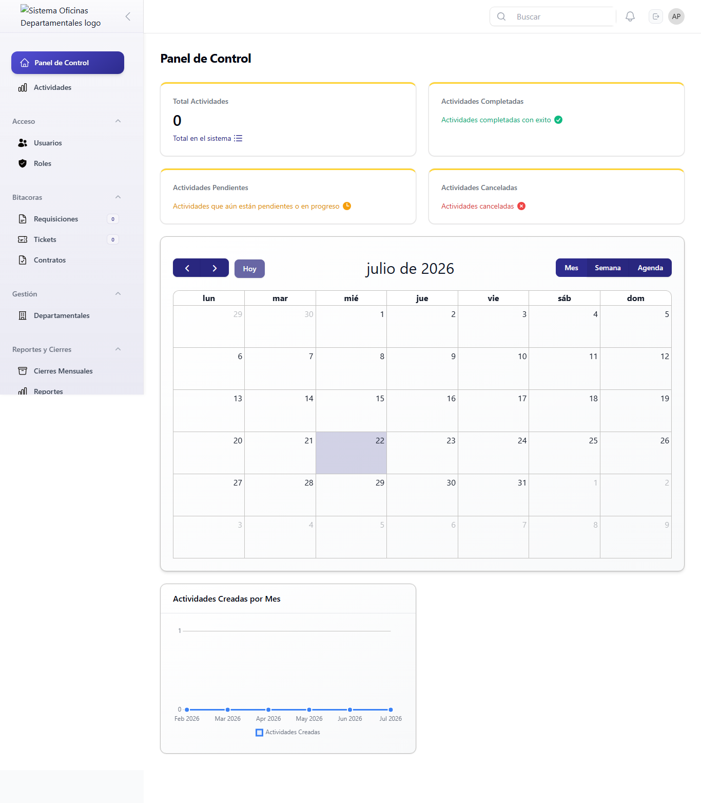
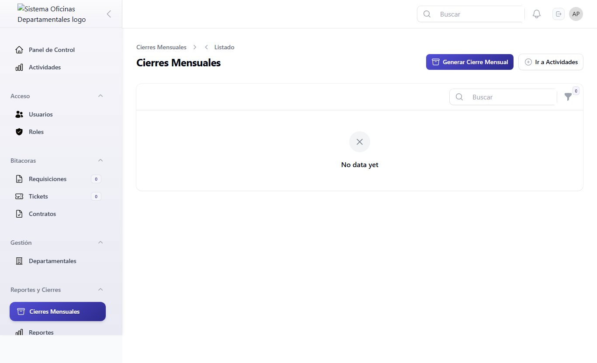
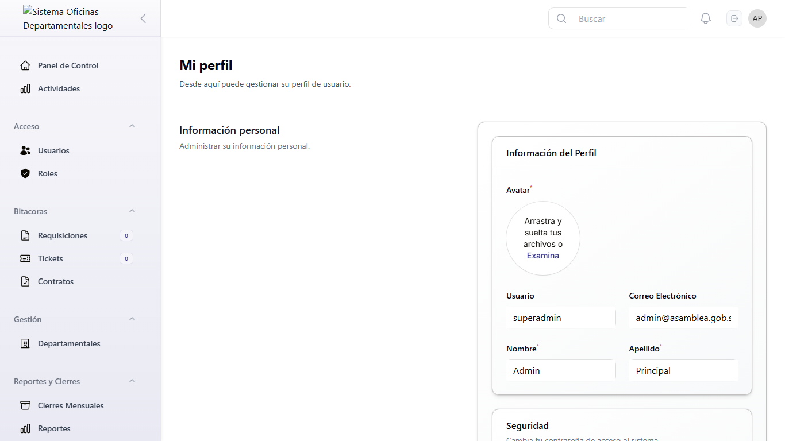

Manual de Usuario Final
Control de documento
| Código | M-DEP-USR-001 |
| Versión | 1.0 |
| Fecha | 21 de julio de 2026 |
| Elaborado por | Unidad de Sistemas |
| Aprobado por | Mesa Directiva |
| Clasificación | Uso interno |
Introducción
Bienvenido al Sistema de Gestión Departamental de la Asamblea Legislativa.
Este sistema le permite a los equipos de las Oficinas Departamentales registrar, dar seguimiento y generar reportes sobre las actividades que realizan en los diferentes municipios y comunidades del país.
El sistema fue diseñado para que cualquier persona, sin importar su experiencia con computadoras, pueda aprender a usarlo rápidamente.
En este manual encontrará explicaciones paso a paso de todas las funciones disponibles, acompañadas de imágenes que le mostrarán exactamente lo que debe ver en su pantalla en cada momento.
Objetivo del Manual
Este manual tiene el propósito de:
- Enseñarle a iniciar sesión en el sistema.
- Explicarle cada pantalla que verá.
- Mostrarle cómo crear y gestionar actividades.
- Guiarlo en el uso de solicitudes de insumos (requisiciones).
- Enseñarle a reportar problemas de soporte (tickets).
- Explicarle cómo consultar contratos.
- Mostrarle cómo generar y descargar reportes.
- Enseñarle las funciones de administración (si tiene los permisos necesarios).
- Ayudarlo a resolver problemas comunes.
Requisitos Técnicos
Para usar el sistema necesita:
| Requisito | Detalle |
|---|---|
| Computadora o tableta | Con acceso a internet |
| Navegador web | Google Chrome, Microsoft Edge o Mozilla Firefox (versión reciente) |
| Usuario y contraseña | Proporcionados por el administrador del sistema |
| Conexión a internet | Velocidad mínima de 1 Mbps |
Para adjuntar archivos (atestados), su computadora debe tener los archivos guardados en una carpeta. El sistema acepta:
- Documentos de Word (extensión .doc o .docx)
- Documentos PDF (extensión .pdf)
- Imágenes (extensión .jpg, .jpeg o .png)
Acceso al Sistema
Pantalla de inicio de sesión
Ingresar al sistema con su nombre de usuario y contraseña.
Cada vez que desee entrar al sistema. Si ya inició sesión antes y cerró el navegador, deberá volver a ingresar.
- Abra su navegador web (Chrome, Edge o Firefox).
- En la barra de direcciones (la barra blanca en la parte superior del navegador), escriba la dirección del sistema. Por ejemplo:
http://localhost:8000/admin. Presione la tecla Enter de su teclado. - Aparecerá la pantalla de inicio de sesión. Verá:
- El título: “Acceso al Sistema — Asamblea Legislativa”
- Un saludo que dice: “Bienvenido”
- Un subtítulo que dice: “Sistema de Gestión Departamental”
- En el campo “Nombre de Usuario”, escriba su nombre de usuario.
- En el campo “Contraseña”, escriba su contraseña.
- Si lo desea, marque la casilla “Recordarme” para que el sistema recuerde sus datos en ese mismo navegador y no tenga que escribirlos cada vez que entre.
- Haga clic en el botón “Iniciar Sesión”.
Si sus datos son correctos, entrará al Panel Principal (Dashboard). Verá una pantalla con varias tarjetas de colores, un calendario y un gráfico.
| Error | Qué significa | Qué hacer |
|---|---|---|
| Credenciales incorrectas | El usuario o la contraseña no coinciden con los registros. | Verifique que escribió bien su usuario y contraseña. Las mayúsculas y minúsculas importan. |
| Campos vacíos | El campo se marca con borde rojo. | Complete el campo para continuar. |
- No comparta su contraseña con nadie.
- Use “Recordarme” solo en computadoras personales, no en computadoras compartidas.
- Si ve que su sesión se cierra sola, simplemente vuelva a iniciar sesión.

Descripción General
Estructura del sistema
Una vez que inicie sesión, el sistema se organiza de la siguiente manera:
- Barra superior (horizontal): A la izquierda, el logo o nombre de la institución. A la derecha, un icono de campana (notificaciones) y su nombre de usuario (para acceder a su perfil o cerrar sesión).
- Menú lateral (vertical, del lado izquierdo): Contiene las secciones principales del sistema.
| Grupo del menú | Secciones que contiene |
|---|---|
| (Sin grupo) | Actividades |
| Bitácoras | Requisiciones, Tickets, Contratos |
| Reportes y Cierres | Cierres Mensuales |
| Gestión | Departamentales |
| Accesos | Usuarios, Roles |
| Configuración | General, Sitio, SEO, Scripts, Redes Sociales, Correo |
Cómo cerrar sesión
- En la barra superior, a la derecha, haga clic en su nombre.
- En el menú que aparece, seleccione “Cerrar Sesión”.
Panel Principal (Dashboard)
Descripción del Dashboard
Tener una vista general rápida de las actividades registradas en el sistema.
Al iniciar sesión, esta es la primera pantalla que verá. Puede regresar a ella en cualquier momento haciendo clic en el nombre del sistema en la barra superior.
El panel principal tiene cuatro secciones:
| Sección | Descripción |
|---|---|
| Total Actividades | Cantidad total de actividades registradas en el sistema. |
| Actividades Completadas | Cuántas actividades se han marcado como completadas. |
| Actividades Pendientes | La suma de actividades en estado “Pendiente” y “En Progreso”. |
| Calendario | Vista mensual con actividades programadas en cada día. Puede navegar entre meses con las flechas. Haga clic en una fecha para ver las actividades de ese día. |
| Gráfico de actividades | Gráfico de línea que muestra cuántas actividades se han creado en cada uno de los últimos 6 meses. |


Gestión de Actividades
Listado de actividades
Ver todas las actividades registradas y buscar actividades específicas.
Cuando necesite consultar las actividades de su oficina, buscar una actividad en particular, o iniciar el proceso para crear, editar o completar una actividad. En el menú lateral, haga clic en “Actividades”.
| Columna | Qué muestra |
|---|---|
| Usuario | Nombre de la persona que creó la actividad. |
| Oficina Departamental | La oficina a la que pertenece la actividad. |
| Programa | Programa: Educación Cívica, Participación Ciudadana o Atención Ciudadana. |
| Macroactividad | Breve descripción de la actividad. Si es muy largo, pase el mouse por encima para leerlo completo. |
| Estado | Pendiente En Progreso Completada Cancelada |
| Archivos | Número de archivos adjuntos. |
| Lugar | Dónde se realizó o se realizará la actividad. |
| Asistencia Total | Suma de asistentes hombres + mujeres. |
| Fecha | Fecha de la actividad (día/mes/año). |
| Fecha de Inicio | Cuándo empezó la actividad (incluye hora). |
| Fecha de Vencimiento | Fecha límite. Si ya pasó y no está completada, se muestra en rojo. |
| Recordatorio | Icono de campana si hay recordatorio, o campana tachada si no. |
Filtros disponibles
| Filtro | Para qué sirve |
|---|---|
| Estado | Muestra solo actividades con un estado específico. |
| Departamental | (Solo para TI/GOL) Muestra actividades de una o varias oficinas. |
| Mínima Asistencia | Muestra solo actividades con asistencia igual o mayor al número indicado. |
| Próximas a Vencer | Interruptor: muestra solo actividades que vencen en los próximos 7 días y no están completadas. |
| Fechas | Filtra entre dos fechas (“Fecha desde” y “Fecha hasta”). |
Acciones disponibles
| Icono | Acción | Disponible |
|---|---|---|
| Ojo 👁 | Ver detalle | Siempre |
| Lápiz ✏️ | Editar | Si no está Completada/Cancelada y el mes no está cerrado |
| Papelera 🗑 | Eliminar | Si no está Completada/Cancelada |
| Check verde ✓ | Marcar como Completada | Si no está Completada/Cancelada |

Crear una actividad con el Asistente
Registrar una actividad nueva paso a paso, con toda la información completa.
- En el menú lateral, haga clic en “Actividades”.
- En la parte superior, haga clic en “Crear con Asistente”.
- Aparecerá un formulario dividido en 4 pasos. Complete cada paso antes de avanzar al siguiente.
Paso 1: Información General
| Campo | Qué debe hacer | Obligatorio |
|---|---|---|
| Usuario | Su nombre aparece automáticamente. No puede cambiarlo. | Sí |
| Fecha de la Actividad | Seleccione la fecha. Haga clic y se abrirá un calendario. | Sí |
| Oficina Departamental | Su oficina aparece automáticamente. | Sí |
| Programa | Seleccione: Educación Cívica, Participación Ciudadana, Atención Ciudadana u Otros. | Sí |
| Estado | Seleccione el estado inicial: Pendiente (recomendado), En Progreso, Completada o Cancelada. | Sí |
Paso 2: Detalles de la Actividad
| Campo | Qué debe hacer | Obligatorio |
|---|---|---|
| Macroactividad | Escriba una descripción detallada: objetivos, alcance, actividades a realizar. | Sí |
| Lugar | Escriba el lugar físico o virtual de la actividad. Ej: “Auditorio Principal”. | Sí |
Paso 3: Programación y Fechas
| Campo | Qué debe hacer | Obligatorio |
|---|---|---|
| Fecha de Inicio | Seleccione fecha y hora de inicio. | Sí |
| Fecha de Vencimiento | Seleccione fecha y hora límite. Debe ser posterior a la fecha de inicio. | Sí |
| Recordatorio | (Opcional) Seleccione fecha y hora para un recordatorio. Debe ser antes del vencimiento. | No |
Paso 4: Documentos y Atestados
- Arrastre archivos o haga clic en el área de carga para seleccionarlos.
- Máximo 10 archivos.
- Cada archivo: máximo 10 MB.
- Tipos aceptados: PDF, Word (.doc, .docx), imágenes (.jpg, .jpeg, .png).
- Puede reordenar los archivos arrastrándolos.
Un coordinador de Sacatepéquez registra un taller de educación cívica: Programa = "Educación Cívica", Macroactividad = "Taller de participación juvenil en el municipio de Antigua Guatemala", Lugar = "Salón Municipal", fecha 15/07/2026, con 50 asistentes esperados. Adjunta el PDF del plan de taller y una imagen del afiche.
Al hacer clic en “Crear Actividad”, verá el mensaje: “¡Actividad creada exitosamente!” y el sistema lo redirigirá al listado de actividades.
- “La fecha de vencimiento no puede ser en el pasado.” — Corrija la fecha.
- Campos obligatorios vacíos — El campo se marca con borde rojo. Complételo para continuar.
- Archivo rechazado — Si pesa más de 10 MB o no es un tipo aceptado.

Añadir Rápido
Crear una actividad rápidamente sin seguir los 4 pasos del asistente.
Cuando necesite registrar una actividad sobre la marcha y luego completar los detalles después. En la pantalla de Actividades, haga clic en “Añadir Rápido”.
| Campo | Obligatorio |
|---|---|
| Usuario, Oficina Departamental, Fecha, Programa, Estado, Fecha de Inicio, Fecha de Vencimiento, Lugar, Macroactividad | Sí |
| Asistentes Hombres, Asistentes Mujeres | Solo si el estado es “Completada” |
| Asistencia Total | Se calcula automáticamente. No puede editarlo. |
Verá el mensaje “¡Actividad creada!” y el sistema lo redirigirá a la pantalla de edición para que pueda adjuntar archivos.
- “La fecha de vencimiento no puede ser en el pasado.”
- “El usuario no tiene departamental asignada.”
- “Faltan datos requeridos: fechas de inicio o vencimiento.”
Ver detalle de una actividad
- En el listado, haga clic en el icono del ojo 👁.
- Verá toda la información de la actividad en una sola pantalla.
- En la parte inferior hay dos pestañas: Atestados (archivos adjuntos) y Comentarios.
Editar una actividad
- Haga clic en el icono del lápiz ✏️.
- Modifique los campos necesarios.
- Haga clic en “Guardar”.
- “Acción no permitida: Esta actividad está completada y no puede ser editada.”
- “Acción no permitida: Esta actividad está cancelada y no puede ser editada.”
- “Permiso Denegado: No tienes permiso para editar esta actividad.”
Marcar como Completada
- Haga clic en el icono del check verde ✓.
- En la ventana que aparece, escriba los asistentes hombres y mujeres. La asistencia total se calcula automáticamente.
- Haga clic en “Confirmar”.
“Actividad marcada como completada — La actividad ha sido actualizada con éxito.”
Atestados (Archivos adjuntos)
En la pantalla de edición o vista de una actividad, en la pestaña Atestados puede adjuntar, ver y descargar archivos. Arrastre los archivos al área de carga o haga clic para seleccionarlos.
Comentarios
En la pestaña Comentarios puede escribir notas sobre una actividad. Solo usted puede editar o eliminar sus propios comentarios.
Requisiciones (Solicitud de Insumos)
Listado de requisiciones
En el menú lateral, vaya a “Bitácoras → Requisiciones”.
| Columna | Qué muestra |
|---|---|
| Tipo de Insumo | Oficina, Limpieza, Tecnología, Mantenimiento, Seguridad, Otros |
| Rubro | Papelería, Electrónica, Mobiliario, Consumibles, Herramientas |
| Cantidad | Número de unidades solicitadas |
| Fecha Solicitud | Fecha de la solicitud (día/Mes/Año) |
| Estado | Solicitada En Revisión Aprobada Rechazada Comprada Entregada |
| Urgencia | Urgente (15+ días), Alta (7-14 días), Media (3-6 días), Baja (0-2 días) |
| Departamental | Oficina que hizo la solicitud |
Crear una requisición
- Vaya a “Bitácoras → Requisiciones”.
- Haga clic en “Crear”.
- Complete: Tipo de Insumo (obligatorio), Rubro (obligatorio), Cantidad (obligatorio, mínimo 1), Fecha de Solicitud, Estado Interno (por defecto Solicitada), Departamental, Observaciones (opcional).
- Haga clic en “Crear”.
Cambiar el estado de una requisición
Haga clic en el botón “Cambiar Estado” (icono de flechas circulares 🔄). Seleccione el nuevo estado y opcionalmente agregue una observación.
La oficina de Alta Verapaz solicita 10 resmas de papel bond (Rubro: Papelería, Tipo: Oficina). La requisición se crea como "Solicitada". A los 5 días pasa a "En Revisión" con urgencia "Media". El administrador la aprueba y la cambia a "Aprobada". Se compra y se marca "Comprada". Finalmente se entrega y pasa a "Entregada".

Tickets (Reportes de Soporte)
Listado de tickets
En el menú lateral, vaya a “Bitácoras → Tickets”.
| Columna | Qué muestra |
|---|---|
| Tipo | Soporte Técnico Mantenimiento Solicitud Incidente Reclamo |
| Motivo/Asunto | Resumen del problema |
| Estado | Pendiente En Proceso Resuelto Cerrado Cancelado |
| Prioridad | Alta (7+ días), Media (3-6 días), Baja (0-2 días) |
| Días | “Hoy” o cantidad de días desde la creación |
Filtros
- Tipo de Ticket, Estado, Departamental
- Solo Abiertos — Pendiente y En Proceso
- Solo Cerrados — Resuelto y Cerrado
- Alta Prioridad — Creados hace 7+ días
Crear un ticket
- Vaya a “Bitácoras → Tickets”.
- Haga clic en “Crear”.
- Complete: Tipo de Ticket (obligatorio), Motivo/Asunto (obligatorio, máx. 255 caracteres), Fecha de Solicitud, Estado, Departamental, Descripción del problema (obligatorio).
- Haga clic en “Crear”.
Cambiar estado / Cerrar tickets
- Individual: Haga clic en “Cambiar Estado” 🔄 y seleccione el nuevo estado.
- Masivo: Seleccione varios tickets con las casillas y haga clic en “Cerrar Tickets”.
Un asistente técnico reporta que la impresora de la oficina de Sacatepéquez no enciende. Crea un ticket tipo "Soporte Técnico" con asunto "Impresora no enciende". El ticket queda "Pendiente" con prioridad "Baja". A los 4 días sin resolver, sube a "Media". El técnico lo cambia a "En Proceso", lo repara y lo marca como "Resuelto".
Contratos
En el menú lateral, vaya a “Bitácoras → Contratos”.
| Columna | Qué muestra |
|---|---|
| Tipo | Servicios Suministros Obras Consultoría Mantenimiento Arrendamiento |
| Proveedor | Nombre del proveedor o contratista |
| Monto | Monto en USD |
| Estado | Vigente Por vencer Vencido |
Filtros
- Tipo de Contrato, Oficina
- Solo Vigentes, Solo Vencidos, Por Vencer (30 días)
Crear un contrato
- Vaya a “Bitácoras → Contratos → Crear”.
- Complete: Tipo (obligatorio), Proveedor (obligatorio, máx. 255), Monto (obligatorio, mínimo 0), Fecha de Inicio (obligatorio), Fecha de Vencimiento (obligatorio, debe ser posterior al inicio), Oficina Responsable (obligatorio, máx. 255), Observaciones (opcional).
- Haga clic en “Crear”.
Se registra un contrato de servicios de limpieza con el proveedor "Limpieza Total S.A." por USD 2,400.00. Inicia el 01/01/2026 y vence el 31/12/2026. El sistema lo marca como "Vigente". Cuando falten 30 días para el vencimiento (diciembre de 2026), pasará a "Por vencer" y generará una notificación.
Cierres Mensuales
Listado de cierres
En el menú lateral, vaya a “Reportes y Cierres → Cierres Mensuales”.
| Columna | Qué muestra |
|---|---|
| Departamental | Oficina del cierre |
| Mes / Año | Período del cierre |
| % Cumplimiento | 80%+ 50-79% <50% |
| Estado | Generado, Aprobado, Reabierto |
| Usuario | Quién generó el cierre |

Generar un cierre mensual
- Vaya a “Actividades” y haga clic en “Generar Cierre Mensual”, o vaya a “Cierres Mensuales → Generar Cierre Mensual”.
- Seleccione:
- Tipo: Cierre Individual (su departamental) o Informe Consolidado (todas, solo SuperAdmin/GOL).
- Mes y Año (por defecto el mes anterior).
- Observaciones (opcional, solo individual).
- Haga clic en “Generar”.
El sistema contará las actividades, calculará el porcentaje de cumplimiento, generará un PDF y bloqueará las actividades de ese mes. Verá el mensaje: “Cierre generado exitosamente”.
En junio, la departamental de Sacatepéquez tenía 20 actividades (15 ejecutadas, 3 pendientes, 2 canceladas). Al generar el cierre, el sistema calcula 15/18 = 83% de cumplimiento (ignora las canceladas). Genera un PDF con el resumen por programa y bloquea las 20 actividades. El cierre queda en estado "Generado".
Notificaciones
El icono de campana 🔔 en la barra superior le muestra alertas del sistema:
- Actividades próximas a vencer.
- Cambios de estado en requisiciones y tickets.
- Confirmaciones de acciones realizadas (éxito o error).
Perfil de Usuario
- En la barra superior, haga clic en su nombre (esquina derecha).
- Seleccione “Mi Perfil”.
- Puede cambiar su foto de perfil y ver su información personal.

Administración de Departamentales
En el menú lateral, vaya a “Gestión → Departamentales”.
| Campo | Obligatorio | Detalle |
|---|---|---|
| Nombre | Sí | Nombre completo del departamento. Único, máx. 120 caracteres. |
| Código | Sí | Abreviatura. Único, máx. 10 caracteres. Ej: AH, SS, SO. |
| Activo | No | Marcado por defecto. Si lo desmarca, la departamental queda inactiva. |
Administración de Usuarios
En el menú lateral, vaya a “Accesos → Usuarios”.
| Campo | Obligatorio | Detalle |
|---|---|---|
| Foto de perfil | No | Seleccione una imagen desde su computadora. |
| Nombre de usuario | Sí | Único, máx. 255 caracteres. |
| Correo electrónico | Sí | Único, formato válido de correo, máx. 255 caracteres. |
| Nombres | Sí | Máx. 255 caracteres. |
| Apellidos | Sí | Máx. 255 caracteres. |
| Contraseña | Sí | Se guarda de forma segura en el sistema. |
| Oficina Departamental | No | Seleccione la oficina del usuario. |
| Roles | No | Uno o más roles para el usuario. |

Suplantación (Impersonate)
Los administradores pueden entrar al sistema como si fueran otro usuario. En el listado, haga clic en “Impersonate” y confirme. Para volver, haga clic en “Salir de la departamental” en la barra superior.
Roles y Permisos
| Rol | Capacidad principal |
|---|---|
| Super Admin | Acceso total a todas las funciones del sistema. |
| TI | Acceso técnico total, similar a Super Admin. |
| GOL | Lectura global y exportación. No puede crear, editar ni eliminar actividades. |
| Coordinador | Gestión completa de actividades de su propia oficina. |
| Asistente Técnico | Carga operativa: ejecutar actividades, adjuntar atestados, gestionar bitácoras. |
| Auditoría | Solo consulta de reportes y registros cerrados. No puede crear ni modificar. |
Configuración del Sistema
| Sección | Qué puede configurar |
|---|---|
| General | Nombre de la marca, logo, favicon, colores del tema, CSS personalizado. |
| Sitio | Modo mantenimiento, nombre, lema, descripción, logo, información de contacto, idioma, zona horaria, enlaces legales, mensajes de error 404/500. |
| Redes Sociales | URLs de: Facebook, Twitter, Instagram, LinkedIn, YouTube, Pinterest, TikTok. |
| SEO | Título, meta descripción, palabras clave, Open Graph, Twitter Cards, Schema.org, códigos de verificación, robots.txt, sitemap. |
| Scripts & Analytics | Scripts para header, body, footer; CSS y JS personalizados; configuración de cookies. |
| Correo | SMTP (host, puerto, usuario, contraseña), Mailgun, Postmark, SES; prueba de envío; cola y límite de envíos; plantillas de correo. |
Reportes Power BI
En el menú lateral, vaya a “Reportes y Cierres → Reportes”. Verá un reporte interactivo de Power BI incrustado en la página.
| Control | Qué hace |
|---|---|
| Pantalla Completa | Expande el reporte a toda la pantalla. |
| Actualizar | Recarga el reporte con datos recientes. |
| Abrir en Power BI | Abre el reporte en Power BI Service. |
Preguntas Frecuentes
Solución de Problemas
| Problema | Posible solución |
|---|---|
| No puedo iniciar sesión | Verifique usuario y contraseña (mayúsculas/minúsculas). Contacte al administrador para restablecerla. |
| La página no carga o se ve en blanco | Actualice (F5). Pruebe con Chrome, Edge o Firefox. El sistema podría estar en mantenimiento. |
| No veo el botón que necesito | Su usuario podría no tener los permisos necesarios. Contacte al administrador. |
| No puedo adjuntar un archivo | Verifique: tipo aceptado (PDF, Word, JPG, PNG) y peso máximo (10 MB). |
| El sistema se ve desordenado | Actualice la página (F5). Pruebe con otro navegador actualizado. |
Glosario
- Actividad
- Un evento, taller, reunión o tarea registrada en el sistema.
- Asistente Técnico
- Rol de usuario que puede cargar información operativa.
- Atestados
- Archivos adjuntos a una actividad (documentos, imágenes, PDFs).
- Auditoría
- Rol de usuario que solo puede consultar información.
- Cierre Mensual
- Reporte que consolida las actividades de un mes.
- Coordinador
- Rol de usuario que gestiona las actividades de su oficina.
- Dashboard
- Panel principal con resumen de información del sistema.
- Departamental
- Oficina departamental de la Asamblea Legislativa.
- GOL
- Rol de usuario con permisos de lectura global y exportación.
- Insumo
- Material o suministro que se solicita (papelería, equipo, etc.).
- Macroactividad
- Descripción detallada de una actividad.
- Permiso
- Autorización para realizar una acción específica en el sistema.
- Requisición
- Solicitud de insumos o materiales.
- Rol
- Conjunto de permisos que tiene un usuario.
- Rubro
- Categoría de un insumo (papelería, electrónica, etc.).
- Super Admin
- Rol con acceso total al sistema.
- TI
- Rol de usuario con acceso técnico total al sistema.
- Ticket
- Reporte de soporte, problema o solicitud.
- Usuario
- Persona que utiliza el sistema, identificada por un nombre de usuario y contraseña.
Consulte el Glosario completo para más términos.
Conclusión
Este manual le ha mostrado cómo usar el Sistema de Gestión Departamental de la Asamblea Legislativa.
Recuerde:
- Use el Asistente para crear actividades completas paso a paso.
- Use Añadir Rápido cuando necesite registrar algo sobre la marcha.
- Revise el Dashboard diariamente para estar al tanto de las actividades próximas a vencer.
- Consulte las Notificaciones (campana) para no perderse ninguna actualización.
- Genere los Cierres Mensuales al final de cada período.
- Si tiene dudas, revise este manual o contacte al administrador del sistema.